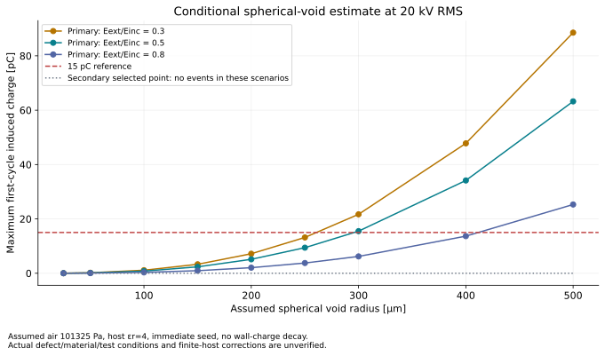
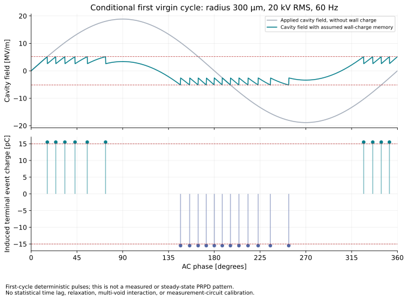

1차 고전압, 가상 공극 반지름 300 μm, 20 kV RMS, 소멸 비 0.5의 조건부 q_app입니다.
2026-10-06 / Conditional partial discharge model
가상 공극의 PD 겉보기 전하 모델
현재 변압기에 가상의 구형 결함을 가정해 pC를 계산합니다. 실제 결함의 존재·크기 또는 시험 합격을 확인한 결과는 아닙니다.
PD 전계의 출처는 기존 7월의 전체 파라미터 모델(6/60턴)입니다. 8월 6일 최종 제작사 CAD와의 동일성은 검증되지 않았습니다.
전압 상승 중 공극 전계가 개시 전계에 처음 도달하는 시점과 이후 이벤트를 계산합니다.
PD ≤ 15 pC의 실제 적합성은 insufficient_data입니다. 15 pC를 넘는 가정 시나리오도 실제 제품의 불합격 판정은 아닙니다.
방전이 단자에서 pC로 보이는 원리
방전은 공극의 전계를 개시 전계 Einc에서 소멸 전계 Eext로 낮추며 벽면 전하를 남깁니다. 그 전하가 측정 단자에 미치는 영향을 호스트 내부의 1 V 가중 전계 Ew로 환산합니다. 변압기 전체 C × V를 PD 전하로 사용하는 계산이 아닙니다.
q_app = 4π ε₀ εr,host r³ (Einc − Eext) Ew
q_app[pC] = q_app[C] × 10¹²
q_app[pC] = q_app[C] × 10¹²
C × ΔV로 표현할 때의 올바른 C와 전압
C_eff = 2π ε₀ εr,host r² Ew
ΔV_void = 2r(Einc − Eext)
q_app = C_eff × ΔV_void
ΔV_void = 2r(Einc − Eext)
q_app = C_eff × ΔV_void
여기서 C_eff는 공극과 측정 단자의 결합을 나타내는 등가값이고, ΔV_void는 공극 내부 전계가 떨어질 때의 국부 전압 변화입니다. 전체 변압기 정전용량 약 625 pF와 시험 인가 전압을 곱하는 값과 구분해야 합니다.
현재 가정의 C_eff0.010014 pF
공극 국부 ΔV_void1,546.987 V
C_eff × ΔV_void15.491 pC
예: 300 μm·소멸 비 0.5의 1차 시나리오에서 0.01001385 pF × 1,546.98727 V ≈ 15.4913 pC입니다. 미개시 조건에서도 이 식의 문턱 전하는 계산할 수 있지만, 이벤트가 없으면 모델 전하는 0 pC입니다.
r은 m, Einc·Eext는 V/m, Ew는 단자 1 V당 V/m(즉 m⁻¹)입니다. 이 식은 구형 공극, 국부적으로 균일한 호스트 전계와 σ cosθ 벽면 전하를 가정합니다. 첫 문턱 이벤트는 Einc − Eext를 사용하며 전압 피크 − 소멸 전계로 대신하지 않습니다. 개시 후 같은 소멸 비에서 첫 이벤트 전하는 전압에 따라 커지지 않지만 이벤트 횟수·위상은 달라질 수 있습니다.
κ = 3εr,host / (εr,gas + 2εr,host)
Evoid(t) = κ Ew √2 Vrms sin(2πft) + Ewall(t)
PDIVrms = Einc / (κ Ew √2)
Evoid(t) = κ Ew √2 Vrms sin(2πft) + Ewall(t)
PDIVrms = Einc / (κ Ew √2)
입력과 가정의 경계
- 공극은 현재 변압기의 호스트 내부에 놓은 가상의 구형 결함입니다. 새로운 변압기 설계 또는 관측된 결함을 뜻하지 않습니다.
- Ew는 실제 native 호스트 내부 위치에서 1 V 가중 전계를 추출했습니다. 수렴하지 않은 경계 Emax를 공극 중심 전계로 대입하지 않았습니다.
- 반지름 25–500 μm, 전압 5·10·15·20 kV RMS, 소멸/개시 전계 비 0.3·0.5·0.8의 216개 시나리오입니다. 공기 101,325 Pa, 호스트 εr=4, AC 60 Hz를 가정했습니다. 실제 PD 시험 전압·유지 시간과 실제 공극 크기는 미정입니다.
- 공기 개시 모델: Einc = 24.2p[1 + 8.6/√(p·2r)]. p는 Pa, r은 m입니다. 이 식은 streamer 개시 관계이며 시작 전자 존재·시간 지연 없음과 공기·압력 경험 계수의 적용을 가정합니다.
- 초기 벽면 전하는 0이며 이벤트 이후 전하 기억을 유지합니다. 전하 이완·통계적 시간 지연·유한 호스트 경계 보정은 생략했습니다. 실제 재료 등급은 확인되지 않았습니다.
- 공극 전체 부피가 참여하는 구형 모델의 전하는 해당 가정 안에서의 값입니다. 변압기 전체 PD의 상한을 보장하지 않습니다.
- 이벤트 0회는 해당 가정·계산 기간에서 발생하지 않았다는 뜻입니다. 실제 PD가 없다는 증명은 아닙니다.
1차 공극 중심의 전계는 안정적이며, 2차 중심의 메시 간 변화 4.585%는 2% 진단 기준을 넘습니다.
가정 시나리오 선택
같은 고전압 측·인가 전압·소멸 비에서 공극 반지름에 따른 계산
| 반지름 (μm) | PDIV (kV RMS) | 첫 이벤트 q_app (pC) | 계산 최대 q_app (pC) | 이벤트 수 | 첫 시점 (ms) | 15 pC 기준 비교 |
|---|
pC는 모델이 유도한 단자 전하의 크기입니다. 표의 15 pC 비교는 조건부 계산의 기준 비교이며 실측 합격·불합격을 뜻하지 않습니다. 고정 반지름·소멸 비에서 문턱을 넘은 즉시 방전하는 첫 이벤트 전하는 일정하고, 인가 전압에 따라 이벤트 수와 위상이 달라집니다.


가정·native 입력 JSON · 전체 계산 결과 JSON · 반지름 곡선 SVG · AC 이벤트 SVG


구현 검증: 관련 테스트 69개 통과. native 내부 위치 확인·선택 지점 메시 변화·공간 변화와 단위·개시·이벤트 계산을 확인했습니다. 실제 내전압·PD 시험 검증은 별도입니다.
실제 PD ≤ 15 pC 적합성은 미확정입니다. 계산 결과는 가정한 결함·재료·압력·시험 전압에서의 조건부 예측입니다. 제조품 결함·환경과 교정된 실제 PD 측정이 확보되어야 시험 목표 충족을 판단할 수 있습니다.
2026-10-05 / Insulation assessment
절연 목표와 검증 근거
시험의 전위 조건, 구현 모델, 실제 해석 결과와 검증 범위를 구분합니다.
정현파 피크 28.284 kV. 각 권선의 양 끝을 각각 단락하며, 1차와 2차를 서로 연결하지 않습니다.
교정된 실제 부분방전 시험으로 확인해야 합니다. PD 시험 전압과 유지 시간은 아직 확정되지 않았습니다.
전계·재료·제조 조건의 검증과 실제 내전압·PD 시험이 필요합니다.
두 가지 고전압 인가 조건
1차 권선 전체를 고전압, 2차 권선 전체를 접지로 설정합니다. 시험 요구는 코어·모든 냉각 하드웨어 접지이며, 모델에서 존재하는 코어·플레이트의 접지를 확인했습니다.
새 1차·2차 케이스는 각각 1 V 기준으로 해석했습니다. E는 피크 인가 전압에 비례하며 20 kV RMS에서는 20,000√2를 곱합니다. 1/8 모델이라는 이유로 E에 ×8을 적용하지 않습니다. 슬라이더는 선형 환산 표시이며 별도 내전압 시험 결과가 아닙니다.
해석·검증 상태전계 추출 · 진단용
환산 Emax (V/mm)미확인
최대 전계 위치미확인
전계 수렴증명 없음
thermal_pad 최대 전계미확인
thermal_pad 최대 위치미확인
정전용량 검증 게이트유효 · C만 검증
절연 합격판정 불가
두 케이스의 C 유효성 검증은 완료했습니다. 국부 전계 수렴과 실제 절연 적합성은 확인되지 않았습니다.
모델이 설명하는 범위
- 두 전위 모델은 각각 단락한 권선의 시험 등전위 조건에 대응합니다. 1 V smoke 이력과 실제 저장된 28 kV RMS 2차 고전압 모델을 구분합니다.
- 정규화한 C는 정전용량이며 PD의 겉보기 전하가 아닙니다. C × V를 PD 15 pC와 비교할 수 없습니다.
- 현재 전체 모델은 7월의 6/60턴 파라미터 기반 형상입니다. 8월 6일 제작 CAD와의 연결·동일성은 확인되지 않았습니다.
- 턴간 종이·테이프가 모델에서 빠져 있습니다(문서 61). 제작 재료의 허용 전계, 연면거리, 공극·기포와 표면 상태도 확인이 필요합니다.
- 9월 28일 범위에서 PT100이 제외되었습니다. 최종 제작품의 센서·배선·접지 구성이 절연 모델에 반영되는지 확인해야 합니다.
국부 전계 판정 한계 모서리의 최대값은 메시와 형상에 민감합니다. 실제 곡률·절연층·재료 특성에 맞춘 메시 수렴과 허용치 비교가 필요합니다.
목표 → 구현 → 해석 → 검증
| 항목 | 목표·시험 조건 | 구현·해석 근거 | 검증 판단 |
|---|---|---|---|
| 전위 조건 | 각 권선 개별 단락, 1차/2차 각각 고전압, 코어·냉각 하드웨어 접지 | 새 1차 케이스: Tx 1 V, Rx·모델 하드웨어 0 V. 새 2차 케이스: Tx 0 V, Rx 1 V, 모델 하드웨어 0 V. native 경계 계약 및 전압 읽기 확인 | 두 고전압 측의 등전위를 개별 확인. 모든 실제 하드웨어의 모델 포함 여부와 시험 배선 확인 필요 |
| 정전용량 | 물리적으로 유효한 C 추출 | 새 1차 행렬: Ctxtx 31,851 pF, |Ctxrx| 300.28 pF, Crxrx 632.51 pF. 새 2차 행렬: Ctxtx 32,160 pF, |Ctxrx| 299.25 pF, Crxrx 624.61 pF | 두 native 행렬·수렴 데이터에 production cap 검증 적용: result_valid_cap=true, valid_capacitance_only. 독립 cap 게이트 및 cap 누락·무효 시 실패하는 종합 게이트 적용 |
| 내전압 | 20 kV RMS / 28.284 kV peak | 1차 환산: 공기 21.033708 kV/mm, pad 15.639801 kV/mm. 새 2차 환산: 공기 1.850630 kV/mm, pad 0.880784 kV/mm. pad εr=4 가정 | 진단용 결과. 국부 Emax 수렴·재료 허용치·제작 조건·실제 시험 근거 부족 (insufficient_data). 허용치가 없어 절연 실패로 단정하지 않음 |
| 부분방전 | ≤ 15 pC; 시험 전압·유지 시간 미정 | 현재 정전계·C 추출은 방전 현상을 직접 산출하지 않음 | 실제 교정 PD 측정 필요 (insufficient_data) |
| 7월 저장 모델 이력 | 현재 재해석과 구분 | 28 kV RMS 2차 고전압 저장값: |Ctxrx| 298.529306 pF, Crxrx 624.671746 pF, 에너지 0.488974265 J. 공기 2.285404 kV/mm, pad 0.800332 kV/mm는 20 kV 환산 이력. 이전 JSON 캐시 302.02 pF는 오래된 값 | 당시 1% 목표 달성(6 passes, 445,724 tetrahedra). 이후 저장 설정 0.1% 목표 달성은 미검증. 현재 UI는 새 1 V 재해석 결과 사용 |
| 새 1차 전계 수렴 | 에너지 수렴과 국부 전계 안정성 각각 확인 | pass 4, 263,903 tetrahedra; 에너지 오차 0.12259%, delta 0.4074%로 1% 목표 달성. pass 3→4: 공기 Emax +14.542168%, pad +3.611277%, pad 최대 위치 객체 변경 | 두 변화율 모두 진단 기준 2% 초과. 에너지 수렴은 달성했지만 국부 Emax 수렴은 미확인 |
| 새 2차 전계 수렴 | 에너지 수렴과 국부 전계 안정성 각각 확인 | pass 5, 342,894 tetrahedra; 에너지 오차 0.422055%, delta 0.365193%로 1% 목표 달성. pass 4→5: 공기 Emax −4.734926%, pad +3.190600%, pad 최대 위치 객체 변경 | 두 변화율 모두 진단 기준 2% 초과. 에너지 수렴은 달성했지만 국부 Emax 수렴은 미확인 |
| 9월 27일 smoke | 해석 경로 확인 | native 전계 데이터 존재; 에너지 오차 0.21622%, delta 0.43545% | C 경로 근거. Emax 메시 수렴의 증명은 아님 |
| 제작 형상·재료 | 8월 6일 CAD와 최종 제조 구성 | 7월 파라미터 형상, 턴간 종이·테이프 누락 | 최종 CAD, 재료 한계·연면거리·공극·PT100 구성 미확인 |
삽입된 근거 데이터와 출처
아래 내장 데이터로 표시합니다. C 유효성은 확인되었으며 실제 내전압·PD 적합성은 근거 부족 상태입니다.
코드 변경·보존·검증
- 기존 EM 유효성 게이트의 cap 누락을 독립
result_valid_cap및 종합 게이트로 수정했습니다. C가 누락·무효이면 종합 해석 성공을 승인하지 않습니다. - 원본 코드·보고서는
D:\MFT_1MW_2026_archive\insulation_audit_20261005\original_code에 보존했습니다. 새 고전압 해석은 백업 복사본에서 수행했습니다. - 두 고전압 native 해석과 추가 메시 refinement를 수행하고 에너지 수렴·Emax·hotspot 변화를 비교했습니다. 실제 export 행렬·native 수렴 데이터에 cap 검증을 적용해 두 케이스 모두 통과했습니다.
- 관련 테스트 59개 통과(CLI 12개 포함). live AEDT에서 경계 계약·MaxPos 및 Rx 1 V 읽기를 확인했습니다. 대상은 Tx 6개, Rx 83개, 접지 52개, 유전체 45개(공기 + pad 44개)입니다.
- 웹 보고서는 내장 JSON·스크립트 구문, 케이스 전환 및 RMS→피크 선형 환산을 확인했습니다. 이 검사는 물리적 절연 검증을 대체하지 않습니다.
절연 적합성 판정에 필요한 후속 근거
- 두 케이스에서 최대 전계 위치 주변을 세분화해 Emax의 안정성을 확인합니다. pad 최대 위치가 바뀐 원인과 실제 모서리 곡률도 확인합니다.
- 8월 6일 제작 CAD, 턴간 종이·테이프, pad 재료·두께·허용 전계와 실제 접지·PT100 배선 구성을 반영합니다.
- 연면거리·공극·기포·오염·습도·온도 등 제조·운전 조건을 확보하고 적용 가능한 재료 허용치와 비교합니다.
- 실제 내전압 시험과 교정 PD 시험을 수행합니다. PD 시험 전압·유지 시간·측정 구성·판정 기준을 먼저 확정합니다.
종합 절연 적합성: 미확정. 정전계 해석의 성공, C 유효성, 내전압 합격, PD 합격은 각각 근거가 필요합니다. 최종 형상·재료·메시 검증과 실제 시험이 완료되어야 절연 목표 충족을 판단할 수 있습니다.
1 MW Medium Frequency Transformer · PyAEDT Review
시뮬레이션은 어디까지
검증됐는가?
기존 변압기 해석 코드를 다시 실행하고, Maxwell 3D·Icepak 경로와 결과 판정을 점검한 기록입니다. 새 설계 결과나 1 MW 정격 인증 자료가 아닙니다.
실행 환경: Windows · AEDT 2025.2
01 / Executive view
한눈에 보는 판정
“성공”의 범위를 전자기 계산, 열 계산, 정격 물리 검증으로 나눴습니다.
GUI에서 Maxwell matrix·capacitance·loss 경로가 완료됐고 결과 내부 판정 result_valid_em=1입니다.
Icepak 메쉬 사전 검증은 통과했으나 Fluent 유동 계산이 발산했습니다. 신뢰할 수 있는 온도 결과가 없습니다.
GUI 실행은 P_target=0인 동작 확인입니다. 정격 손실·최고온도·설계 적합성을 결론 내릴 수 없습니다.
읽는 법 아래 수치들은 실제 GUI 점검 케이스의 결과입니다. 목표 운전점과 시험 케이스의 전압·전력 조건이 다르므로, 수치가 정상적으로 추출됐다는 사실과 설계 목표 충족 여부를 혼동하지 마세요.
02 / Configuration
모델과 실행 조건
버튼을 눌러 설계 목표, GUI 점검, 열해석 시도의 차이를 비교할 수 있습니다.
GUI 전자기 점검 · simulation5
완료최종 main 코드로 AEDT GUI에서 실행한 재실행 점검 케이스
해석 객체 관계 개념도 · 축척 아님
코어·권선·냉각판의 존재 관계를 설명한 그림입니다. 실제 CAD 형상, 길이, 절연 간격을 재현하지 않습니다.
코어Tx 권선Rx 권선냉각판
GUI 점검 케이스의 모델 세부값
권선Tx 4턴 · Rx 8턴
코어 그룹3개
대칭1/8 모델
코어 판 / WCP각 12 mm
열전달 패드각 2 mm
모서리반경 8 mm
값은 verification_params/thermal_smoke.json과 실제 RESULT_JSON 기준입니다. 코어 재료 항목은 1K101 등가 모델이며, 투자율은 데이터시트 B-H 곡선이 아닌 기존 상수 μr=3000 가정입니다.
03 / Solver chain
해석 파이프라인
각 단계를 선택하면 역할과 이번 점검 상태가 표시됩니다.
선택한 단계
입력 검증
고정 케이스와 명령행 설정을 합치고 값의 일관성을 검사합니다. 달성 불가능한 DAB 목표 전력은 해석 성공으로 기록하지 않도록 수정했습니다.
GUI 점검은 Icepak 단계를 끈 상태로 실행했습니다. 별도 열 점검에서는 Icepak native 메쉬와 사전 검사를 통과했지만 Fluent가 수렴하지 않아 결과가 유효하지 않습니다.
04 / Observed data
전자기 실행 결과
아래는 simulation5의 원시 결과 필드에서 뽑은 점검 지표입니다.
솔버 실행 단계
Matrix
23.91 s
Capacitance
18.05 s
Loss
38.47 s
솔브 시간만 표시했습니다. AEDT 시작·모델 생성·추출·저장을 포함한 프로세스 전체 시간은 약 165초입니다.
| 단계 | 설정: 최대 pass / 목표 오차 | 실제 pass | 테트라 요소 |
|---|---|---|---|
| Matrix | 20 / 1.5% | 3 | 4,573 |
| Capacitance | 10 / 1.0% | 4 | 5,785 |
| Loss | 6 / 3.0% | 4 | 33,337 |
추출값 스냅샷
결합계수 k0.99652원시 결과
1차 누설 인덕턴스 Llt4.593 µH시험 형상 기준
권선 간 용량 Ctx-rx84.984 pF8.4984×10⁻¹¹ F
코어 평균 B0.707 Tmaterial basis
코어 손실 필드324.91 WP_core_total
권선 손실 필드49.59 WP_winding_total
원시 최대 B 필드는 2.601 T이지만 결과가 에지·분할 경계의 스파이크로
diagnostic_only라 표시합니다. 이를 코어 전체의 승인 기준으로 사용하지 않습니다.손실 수치는 단일 주파수 정현파 여기의 진단용 근사입니다. 실제 DAB 스위칭 파형의 고조파 손실, 비선형 B-H 모델, 열 피드백이 검증된 정격 수치가 아닙니다.
05 / Code changes
이번에 바꾼 판정 로직
변경 목적은 해석 실패를 성공으로 기록하지 않고 재실행 조건을 추적 가능하게 만드는 것입니다.
06 / Validation record
검증 이력과 한계
테스트 통과와 실제 솔버 수렴을 구분해 기록했습니다.
STEP 01 · CODE
회귀 테스트
시뮬레이션 관련 279개, 모니터링 327개 통과·3개 건너뜀. 합계 606 통과·3 건너뜀.
코드 경로 확인STEP 02 · MODEL
Model-only
고정 입력을 사용한 headless 형상 생성 점검 통과.
모델 생성 확인STEP 03 · MAXWELL
EM headless + GUI
matrix·capacitance·loss를 재실행. GUI 결과 result_valid_em=1, 프로젝트 SOLVED.
STEP 04 · ICEPAK
열 점검 실패
메쉬 검증 후 Fluent 82회 반복에서 잔차 4.33×10², 0 K 제한 및 outlet 역류가 발생.
온도 결과 없음실제 남은 문제 열 경계조건·초기조건·메쉬 품질·솔버 설정을 원시 Fluent 로그와 함께 점검하고, 유효한 대표 조건을 끝까지 수렴시켜야 합니다. 이번 실패 사례를 온도 데이터나 설계 승인 근거로 사용하면 안 됩니다.
07 / Repository consolidation
브랜치·폴더 정리
작업트리 변경과 기존 코드·생성 데이터의 복구 가능성을 함께 확인했습니다.
현재 상태
main 1개
로컬·원격 브랜치 모두 main. 최종 코드 기준 371035c.
- 547 → 222 등록 작업트리로 감소
- Y:\git 형제 폴더 39개 백업 검증 후 정리
- MFT_1MW 이름의 폴더는 메인 하나만 남음
- 남은 222개 중 218개는 별도 운영 경로의 배포 작업트리
백업과 보존
54.3 GB+
기존 변경·생성 파일 22,044개를 SHA-256으로 검증해 보관. 이후 별도 저장소 전체 복사본도 추가 보관했습니다.
- Git bundle로 당시 HEAD·코드 이력 보존
- 독립 저장소·작업 폴더는 파일 목록/크기/해시 일치 후 원본 제거
MFT_solver_pooled_260714는 짧은 백업 경로에서 새 전체 복사를 검증한 뒤 제거- 별개 프로젝트로 보이는
MFT_TAB계열은 유지
08 / Remaining work
다음 검증 순서
새 변압기를 설계하는 단계가 아니라, 현재 코드가 신뢰 가능한 결과를 만드는지 확인하는 작업입니다.
Icepak 수렴 재현
잔차 급증 지점, 역류와 0 K 제한의 원인을 추적해 유효한 온도 결과를 확보합니다.
재료·여기 조건 대조
상수 μr와 단일 주파수 손실 근사를 재료 B-H 데이터, 실제 DAB 파형과 비교합니다.
대표 조건 회귀화
비영 전력 대표 케이스와 메쉬 수렴을 확인한 뒤 정기 회귀 시험에 고정합니다. 운영 작업트리는 별도 사용 현황 확인 후 정리합니다.
09 / Evidence index
근거 자료
경로를 복사해 원본 보고서, 코드, 실행 로그를 열 수 있습니다. 웹 공개본에는 로컬 파일이 포함되지 않습니다.
기록 경로는 이 작업 환경 기준입니다.